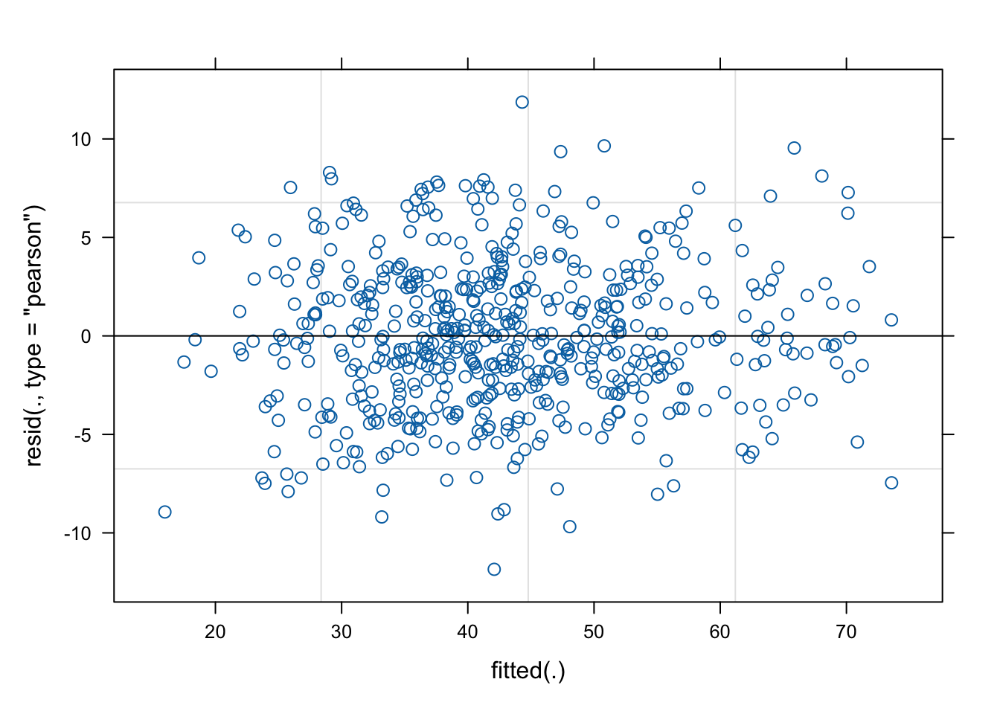
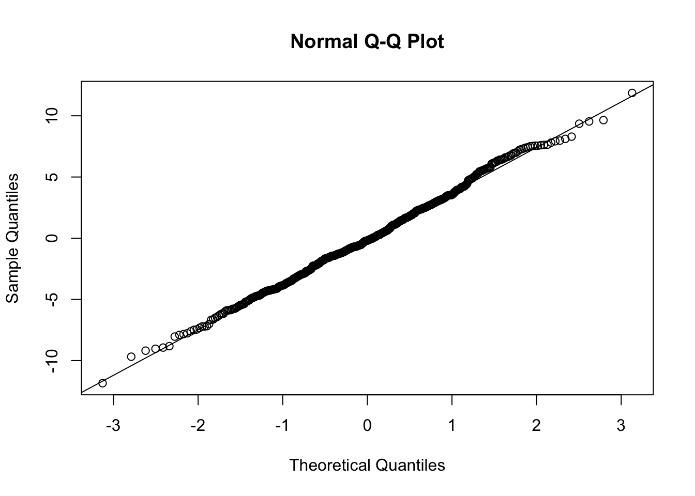
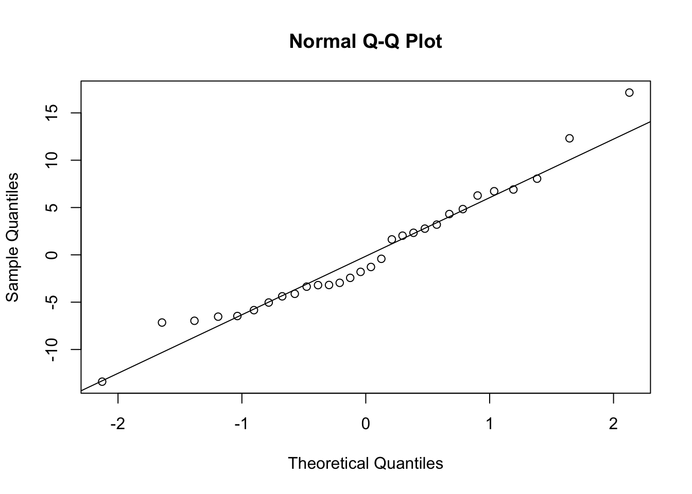
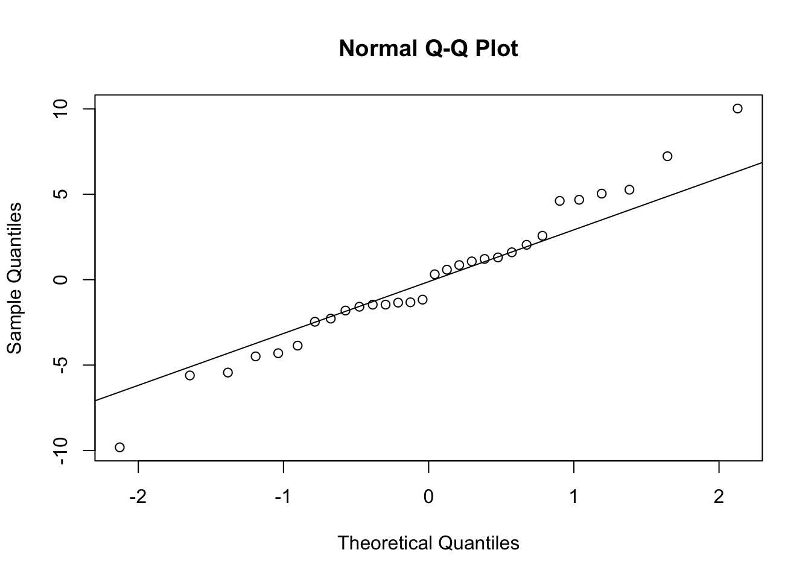
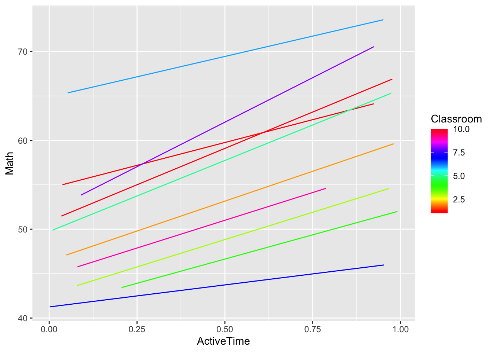
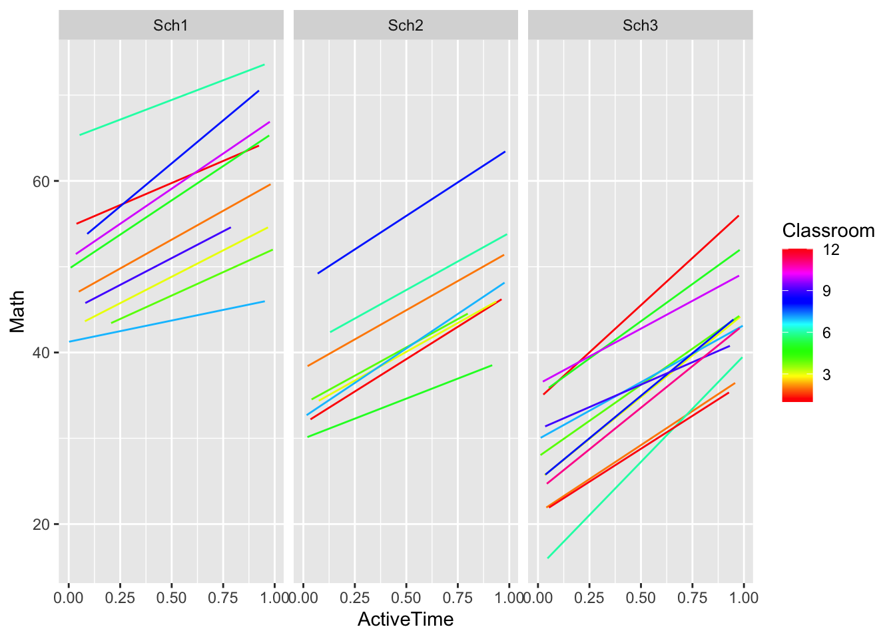

5 Multilevel Modelling Practical 4 (Week 5)
5.1 Instructions – start here!
In this lab we will analyse the ``Active Time’’ data set considered at the end of the Lecture 5 slides. This lab is a little shorter than previous labs to allow time to understand the 3-level structure of the data and appropriate models.
We initially load the packages we need.
5.2 Exercise 1: Analysis of the Active Time study data (lecture 5)
Read in the data as follows.
Visually inspect the data frame.
## Math ActiveTime ClassSize Classroom School StudentID
## 1 55.42604 0.06913359 18 1 Sch1 1
## 2 54.34306 0.08462063 18 1 Sch1 2
## 3 61.42570 0.12994557 18 1 Sch1 3
## 4 56.12271 0.74613202 18 1 Sch1 4
## 5 53.34900 0.03887918 18 1 Sch1 5
## 6 57.99773 0.68563542 18 1 Sch1 6We have the following variables:
Mathmaths score on \((0,100)\) (response variable)ActiveTimea standardised (to \((0,1)\)) measure of physical activity (covariate)ClassSizethe size of a given class (covariate)ClassroomClass identifierSchoolSchool identifierStudentIDstudent identifier
We have a 3-level structure with students nested in classes in schools. Plainly, we have ActiveTime at the student level and ClassSize at the class level.
We can see the number of schools, classrooms within each school and number of students in each class via
## $Sch1
##
## 1 2 3 4 5 6 7 8 9 10
## 18 14 20 14 15 18 20 16 12 14
##
## $Sch2
##
## 1 2 3 4 5 6 7 8
## 18 18 15 21 18 20 20 18
##
## $Sch3
##
## 1 2 3 4 5 6 7 8 9 10 11 12
## 19 24 20 24 23 20 24 20 19 23 24 21For example, school 1 has 10 classes, with student numbers ranging from 12 to 20.
\(~\)
5.2.1 How important is group structure? (VPCs and ICCs)
Let \(y_{ijk}\) denote the response maths for student \(i\) in class \(j\) in school \(k\). The random intercept only (empty) model is:
\[y_{ijk} = \gamma_0 +u_{jk}+v_k+\epsilon_{ijk}\] where \(u_{jk}\sim N(0,\sigma^2_u)\) is the random effect for classroom, \(v_k\sim N(0,\sigma^2_v)\) is the random effect for school and \(\epsilon_{ijk}\sim N(0,\sigma^2)\) is the usual error term. All random variables here are assumed independent.
\(~\)
We fit and summarise the random intercept only (empty model) via:
## Linear mixed model fit by REML. t-tests use Satterthwaite's method ['lmerModLmerTest']
## Formula: Math ~ 1 + (1 | School) + (1 | School:Classroom)
## Data: Sim3level
##
## REML criterion at convergence: 3776.7
##
## Scaled residuals:
## Min 1Q Median 3Q Max
## -3.5226 -0.6752 0.0000 0.6549 2.7502
##
## Random effects:
## Groups Name Variance Std.Dev.
## School:Classroom (Intercept) 44.93 6.703
## School (Intercept) 91.85 9.584
## Residual 37.22 6.101
## Number of obs: 570, groups: School:Classroom, 30; School, 3
##
## Fixed effects:
## Estimate Std. Error df t value Pr(>|t|)
## (Intercept) 44.420 5.677 2.016 7.825 0.0156 *
## ---
## Signif. codes: 0 '***' 0.001 '**' 0.01 '*' 0.05 '.' 0.1 ' ' 1We can then extract the estimated variance components from the model via:
## grp var1 var2 vcov sdcor
## 1 School:Classroom (Intercept) <NA> 44.93358 6.703252
## 2 School (Intercept) <NA> 91.85144 9.583915
## 3 Residual <NA> <NA> 37.21794 6.100651(Note: Alternatively you could use summary(Model.0)$varcor.)
TASK: Find and interpret all VPC and ICC values.
Click for solution
VPC estimates
sig <- REsummary$vcov[3] #Residual variance
sigv <- REsummary$vcov[2] #RE variance for school
sigu <- REsummary$vcov[1] #RE variance for class
totalvar <- sum(REsummary$vcov) #total variance
vpc.school <- sigv/totalvar
vpc.class <- sigu/totalvar
vpc.school## [1] 0.5278728## [1] 0.2582346ICC estimates
## [1] 0.5278728## [1] 0.7861074\(~\)
5.2.2 Three level Model with explanatory variables
The random intercept model with covariates for ActiveTime and ClassSize is given by
\[y_{ijk}=a+b_{1}\text{ActiveTime}_{ijk}+b_2\text{Class}_{jk}+u_{jk}+v_{k}+\epsilon_{ijk}\]
We fit this model with the code:
Model.1 <- lmer(Math ~ ActiveTime+ClassSize
+(1|School)
+(1|School:Classroom),
data=Sim3level)
summary(Model.1)## Linear mixed model fit by REML. t-tests use Satterthwaite's method ['lmerModLmerTest']
## Formula: Math ~ ActiveTime + ClassSize + (1 | School) + (1 | School:Classroom)
## Data: Sim3level
##
## REML criterion at convergence: 3367.1
##
## Scaled residuals:
## Min 1Q Median 3Q Max
## -3.3086 -0.6518 -0.0488 0.6330 3.0744
##
## Random effects:
## Groups Name Variance Std.Dev.
## School:Classroom (Intercept) 46.55 6.823
## School (Intercept) 83.98 9.164
## Residual 17.54 4.188
## Number of obs: 570, groups: School:Classroom, 30; School, 3
##
## Fixed effects:
## Estimate Std. Error df t value Pr(>|t|)
## (Intercept) 41.1849 11.9131 17.8660 3.457 0.00284 **
## ActiveTime 14.9476 0.6066 539.8898 24.643 < 2e-16 ***
## ClassSize -0.2110 0.5634 27.9933 -0.374 0.71089
## ---
## Signif. codes: 0 '***' 0.001 '**' 0.01 '*' 0.05 '.' 0.1 ' ' 1
##
## Correlation of Fixed Effects:
## (Intr) ActvTm
## ActiveTime -0.030
## ClassSize -0.889 0.007Note that the above can be equivalently executed via
5.2.3 Comparison of empty model with model with explanatory variables
To test the null hypothesis that \(b_1=0\) and \(b_{2}=0\) against an alternative that at least one of these fixed effects is not 0, we can use
## refitting model(s) with ML (instead of REML)## Data: Sim3level
## Models:
## Model.0: Math ~ 1 + (1 | School) + (1 | School:Classroom)
## Model.1: Math ~ ActiveTime + ClassSize + (1 | School) + (1 | School:Classroom)
## npar AIC BIC logLik deviance Chisq Df Pr(>Chisq)
## Model.0 4 3789.8 3807.2 -1890.9 3781.8
## Model.1 6 3385.6 3411.7 -1686.8 3373.6 408.21 2 < 2.2e-16 ***
## ---
## Signif. codes: 0 '***' 0.001 '**' 0.01 '*' 0.05 '.' 0.1 ' ' 1Plainly, the null hypothesis is rejected, suggesting that explanatory variables are needed. BUT, do we need both? Look at the output of:
Is ClassSize needed? I think not!
5.2.4 Further analysis (bottom up approach)
TASK: How does the model without the ClassSize covariate (say Model.2) compare to Model.1? This question is really asking is how the deviance changes from Model.1 to Model.2. We know that the simpler Model.2 will have a bigger deviance than Model.1. BUT, if this difference is very small, we should prefer the simpler model. Test this hypothesis formally using the anova() function (after first creating Model.2 using lmer()).
Click for solution
Remove ClassSize and refit:
## Linear mixed model fit by REML. t-tests use Satterthwaite's method ['lmerModLmerTest']
## Formula: Math ~ ActiveTime + (1 | School/Classroom)
## Data: Sim3level
##
## REML criterion at convergence: 3367.9
##
## Scaled residuals:
## Min 1Q Median 3Q Max
## -3.3082 -0.6504 -0.0510 0.6339 3.0697
##
## Random effects:
## Groups Name Variance Std.Dev.
## Classroom:School (Intercept) 44.71 6.686
## School (Intercept) 92.65 9.626
## Residual 17.54 4.188
## Number of obs: 570, groups: Classroom:School, 30; School, 3
##
## Fixed effects:
## Estimate Std. Error df t value Pr(>|t|)
## (Intercept) 37.2207 5.7037 2.0272 6.526 0.0219 *
## ActiveTime 14.9492 0.6065 539.9821 24.647 <2e-16 ***
## ---
## Signif. codes: 0 '***' 0.001 '**' 0.01 '*' 0.05 '.' 0.1 ' ' 1
##
## Correlation of Fixed Effects:
## (Intr)
## ActiveTime -0.051Now compare models with and without the ClassSize fixed effect:
## refitting model(s) with ML (instead of REML)## Data: Sim3level
## Models:
## Model.2: Math ~ ActiveTime + (1 | School/Classroom)
## Model.1: Math ~ ActiveTime + ClassSize + (1 | School) + (1 | School:Classroom)
## npar AIC BIC logLik deviance Chisq Df Pr(>Chisq)
## Model.2 5 3383.9 3405.6 -1686.9 3373.9
## Model.1 6 3385.6 3411.7 -1686.8 3373.6 0.279 1 0.5974ClassSize is zero. We therefore retain the null and conclude that ClassSize is not needed.
\(~\)
TASK: Is a random slope needed (allowing a different slope for ActiveTime in each class)? Create Model.3 using lmer() with the inclusion of a random slope for ActiveTime. Test the null hypothesis that the random slope variance is zero using ranova(Model.3).
Click for solution
Now let’s add a random slope for ActiveTime:
Now test to see if the random slope variance can be assumed zero or not:
## ANOVA-like table for random-effects: Single term deletions
##
## Model:
## Math ~ ActiveTime + (1 | School) + (1 + ActiveTime | School:Classroom)
## npar logLik AIC LRT Df Pr(>Chisq)
## <none> 7 -1666.0 3346.0
## (1 | School) 6 -1674.7 3361.4 17.355 1 3.101e-05 ***
## ActiveTime in (1 + ActiveTime | School:Classroom) 5 -1684.0 3377.9 35.928 2 1.579e-08 ***
## ---
## Signif. codes: 0 '***' 0.001 '**' 0.01 '*' 0.05 '.' 0.1 ' ' 1\(~\)
TASK: Is the resulting model a good fit (check diagnostics)? Try plot(Model.3) then use resid() and ranef() to get estimated residuals and random effects. For the latter, note that a list will be returned, with the first list item holding the estimated intercepts and slopes the class level, and the second list item holding the estimated intercepts at the school level.
Click for solution
Diagnostics:




I think the fit looks reasonable - why?\(~\)
TASK (harder): How can we visualise the fit of Model.3? Recall the predict function and use ggplot() to produce a graph showing fitted lines for all classrooms in school 1.
Click for solution
\(~\)
Understanding the model: Model.3 can be written mathematically as
\[y_{ijk}=a+b\text{ActiveTime}_{ijk}+w_{jk}\text{ActiveTime}_{ijk}+u_{jk}+v_{k}+\epsilon_{ijk}\] with \(w_{jk}\sim N(0,\sigma^2_w)\) representing the random slopes (we get a different one for each classroom and school combination). We can visualise the fitted model in all 3 schools:

Click for the code to see the above
The plots above make clear the role of the random intercept and slope terms at the classroom level; the fitted line for each classroom \(j\) within a school \(k\) has its own intercept \(a+u_{jk}+v_{k}\) and slope \(b+w_{jk}\). Hence, \(a\) gives the average intercept value, the \(v_{k}\) term allows for differences in intercept values between schools and the \(u_{jk}\) allows for further intercept differences between classrooms within schools. Similary, the random slope \(w_{jk}\) allows for a different linear relationship between the response and covariate for each classroom-school combination.
What else can you say that is interesting?
- Try interpreting the effect of \(\text{ActiveTime}\) on the expected response.
- Look at the correlation between the \(u_{jk}\) and \(w_{jk}\) (from the model summary). Does it make sense in light of the plot above?
- We could try including a random slope on \(\text{ActiveTime}\) at the school level. This will more than likely give a “boundary (singular) fit” warning, which usually indicates over-fitting. This can happen if there are too few observations to reliably estimate the parameters at a particular level (and note that we only have 3 schools here). In this case, reducing the complexity of the model (by removing the higher level random slope) is recommended.
\(~\)
End of lab!